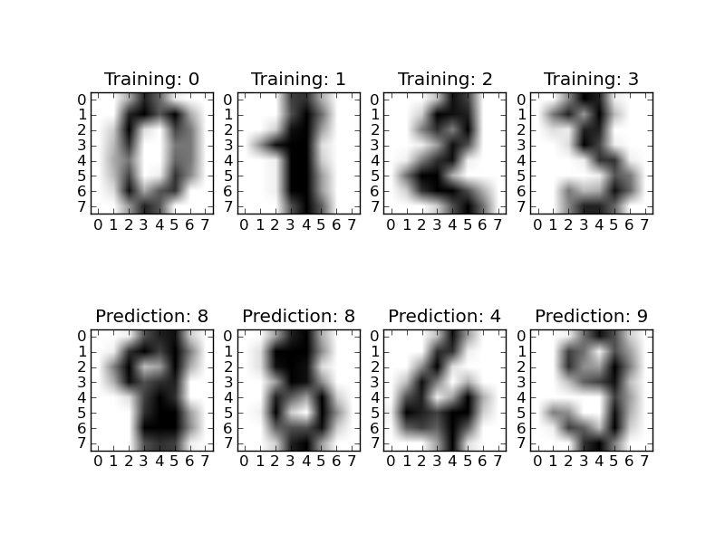

Recognizing hand-written digits¶
An example showing how the scikit-learn can be used to recognize images of hand-written digits.
Python source code: plot_digits_classification.py
print __doc__
# Author: Gael Varoquaux <gael dot varoquaux at normalesup dot org>
# License: Simplified BSD
# Standard scientific Python imports
import pylab as pl
# The digits dataset
from scikits.learn import datasets
digits = datasets.load_digits()
# The data that we are interested in is made of 8x8 images of digits,
# let's have a look at the first 3 images. We know which digit they
# represent: it is given in the 'target' of the dataset.
for index, (image, label) in enumerate(zip(digits.images, digits.target)[:4]):
pl.subplot(2, 4, index+1)
pl.imshow(image, cmap=pl.cm.gray_r)
pl.title('Training: %i' % label)
# To apply an classifier on this data, we need to flatten the image, to
# turn the data in a (samples, feature) matrix:
n_samples = len(digits.images)
data = digits.images.reshape((n_samples, -1))
# Import a classifier:
from scikits.learn import svm
from scikits.learn.metrics import classification_report
from scikits.learn.metrics import confusion_matrix
classifier = svm.SVC()
# We learn the digits on the first half of the digits
classifier.fit(data[:n_samples/2], digits.target[:n_samples/2])
# Now predict the value of the digit on the second half:
expected = digits.target[n_samples/2:]
predicted = classifier.predict(data[n_samples/2:])
print "Classification report for classifier:"
print classifier
print
print classification_report(expected, predicted)
print
print "Confusion matrix:"
print confusion_matrix(expected, predicted)
for index, (image, prediction) in enumerate(
zip(digits.images[n_samples/2:], predicted)[:4]):
pl.subplot(2, 4, index+5)
pl.imshow(image, cmap=pl.cm.gray_r)
pl.title('Prediction: %i' % prediction)
pl.show()